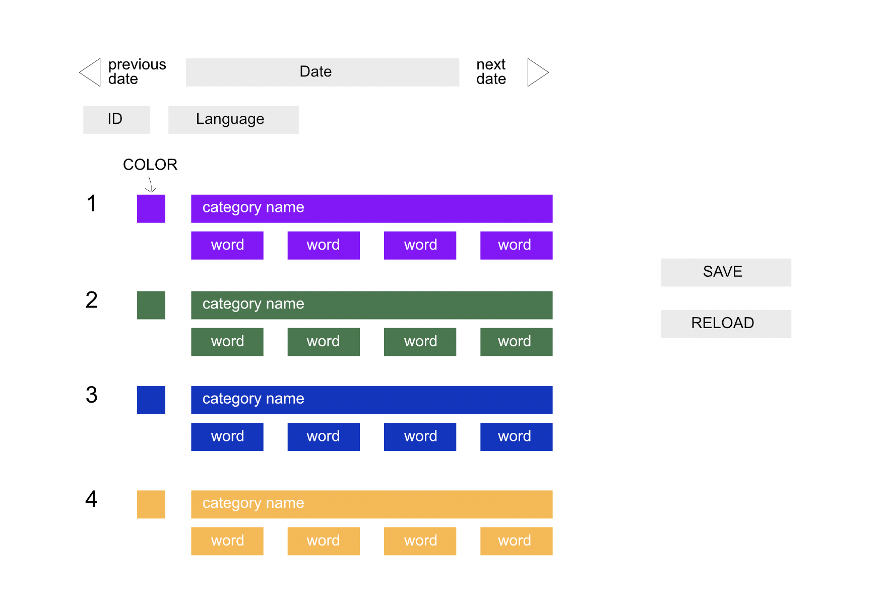
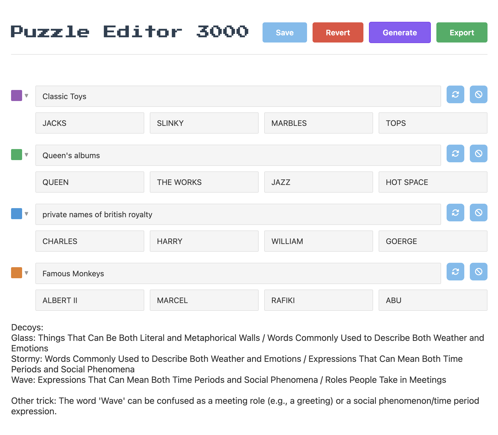

I wanted to get serious about working with AI. Not just prompting, but building a real feedback loop between human judgment and AI output. I needed a project I could ship, something with real users and real decisions. I chose a format I already loved: the word connections puzzle. Find 4 groups of 4 words that belong together. Simple rules, deep design space.
Grooped is a daily word game I designed, built, and ship solo. The front end, the game logic, the puzzle generation pipeline, the editorial tooling, and the analytics. I'm not a developer. Everything was built with AI assistance, and that was the point.
Every puzzle starts with a prompt. I built an internal tool called Puzzle Editor 3000 that generates a full puzzle: four categories, four words each, plus intentional decoys — words designed to blur the lines between groups.
But AI alone doesn't make a good puzzle. The generator checks every new puzzle against a file of previously published categories so it never repeats itself, and against a banned list of categories I've rejected. When I ban a category, it gets replaced with a fresh one automatically and the system remembers not to suggest it again.
From there, I can swap individual words, rewrite category names, or type my own category and let the AI generate words to match it. Every puzzle also comes with a reasoning breakdown: why these decoys, which words could mislead, and how the groups overlap. That's my quality check. If the misdirection is too obvious or too obscure, I catch it before anything goes live.
AI proposes. I curate. The system gets sharper over time.

Early wireframe for the puzzle editor.

Puzzle Editor 3000: the tool I built to generate, edit, and curate puzzles.
The quality of the output lives or dies on the prompt. Writing it was a design problem: precise enough to produce consistent results, flexible enough to surprise me. This is the actual system prompt the generator uses, loaded live from the source code.
Loading prompt...
The entire game — the front end, the game logic, the animations — was built with AI assistance. My basic knowledge of HTML, CSS, and JavaScript helped me steer, debug, and understand what the AI was explaining, but I couldn't have built this alone.
The part that surprised me was the small things. When a player solves a category, it collapses into a colored block at the top of the grid. But the order depends on which group you solve first, second, third. That reordering logic wasn't something I'd considered until it broke. It's the kind of invisible detail that feels natural when it works and immediately wrong when it doesn't.


I connected Microsoft Clarity to track how people actually play. Not surveys, not friend feedback. Session recordings of real behavior. I believe in seeing what people do, not asking what they would do.
What I learned: people play fast and lose patience faster. A couple of wrong guesses and some players just leave. That insight pushed me to dial back the AI's independence and make puzzles more solvable. The challenge should feel rewarding, not punishing.
"I believe in seeing what people do, not asking what they would do."
Microsoft Clarity session recording: tracking real player behavior.
The creative part of this project is the puzzle design itself. Each puzzle is a small system of intentional overlap. Take one example: JAWS, BULL, TIGER, MAKO. All sharks. But JAWS is also a Bond villain. BULL could be a steak cut. TIGER could be an arcade game. Designing that web of almost-right answers is the closest I've come to level design, and it's the part I enjoy most.
Curious? Give it a try.